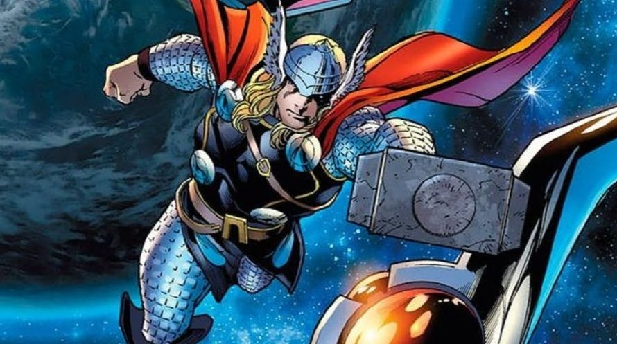
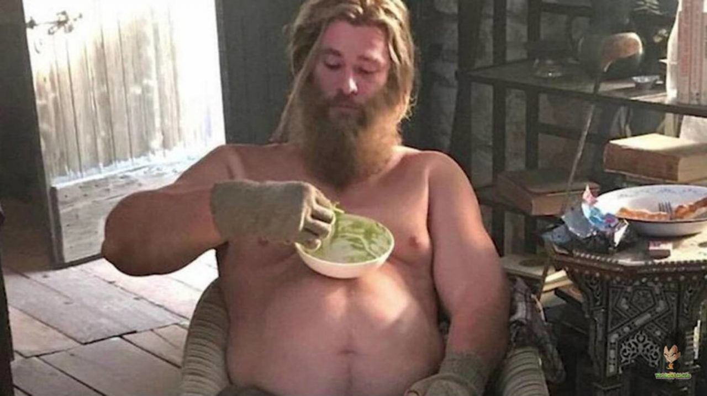
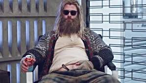
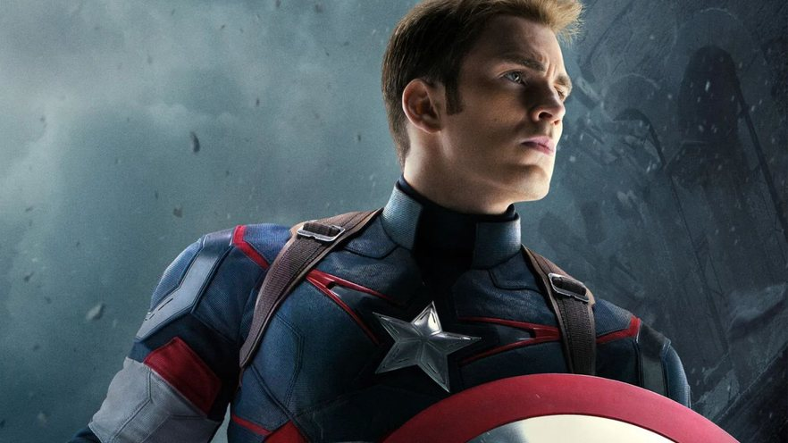
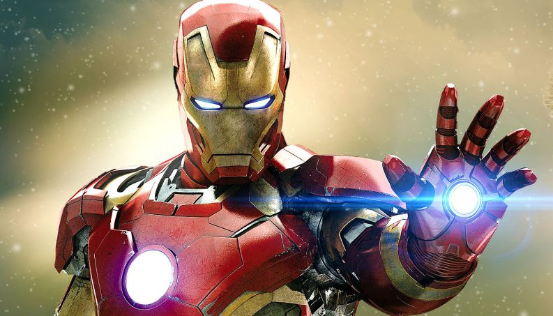
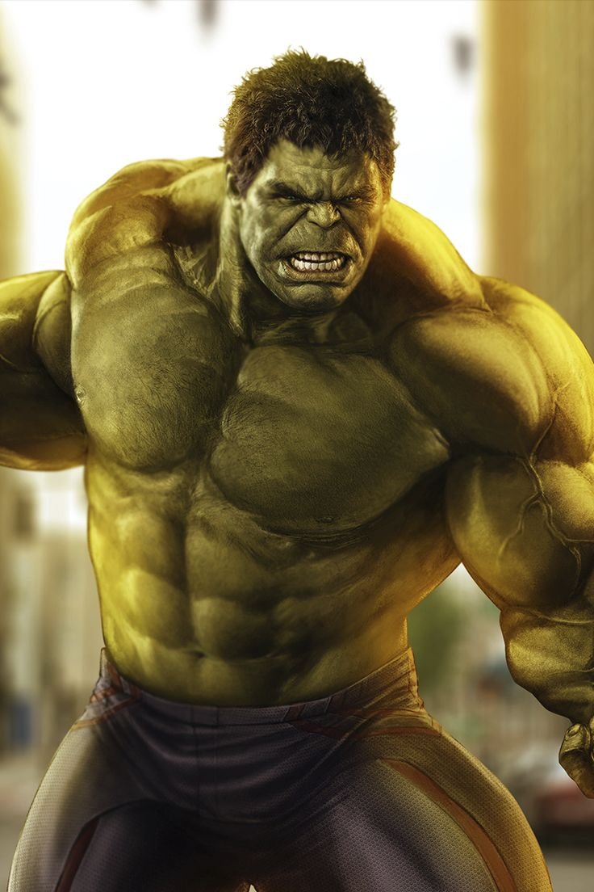
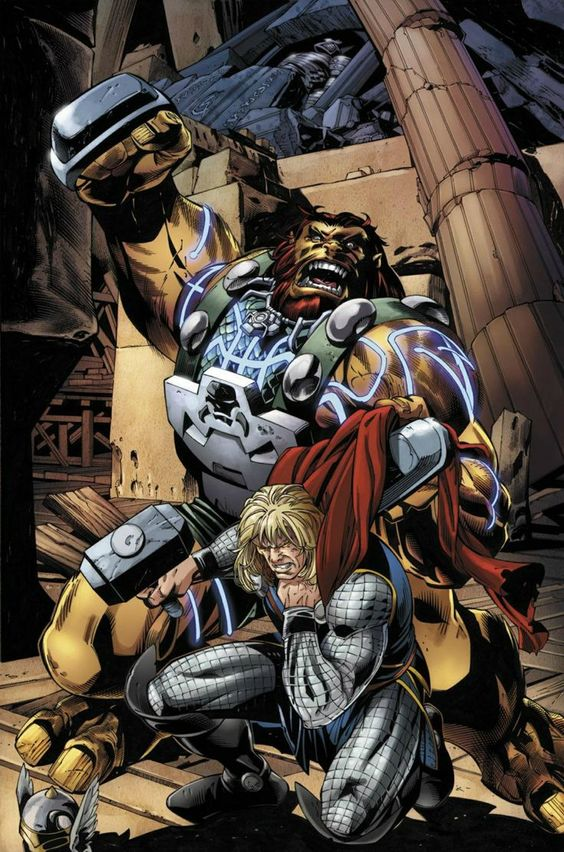
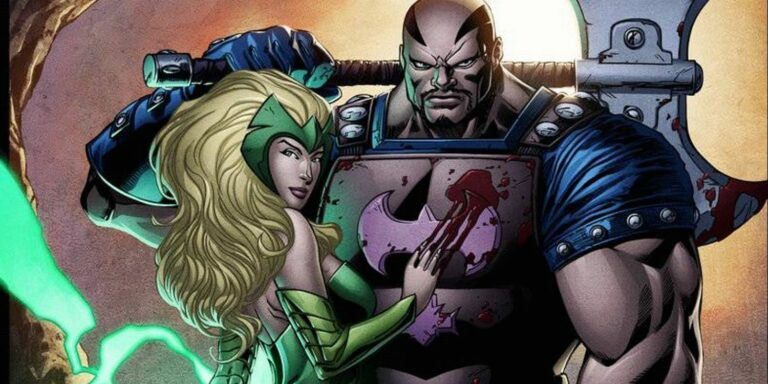
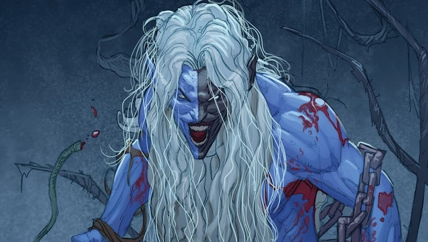

Thor é visto voando em Xique-Xique Bahia
Thor é confundido com meteoro no céu da Bahia
Thor é visto comendo em posto beira de estrada
Thor está de dieta e quase não come em posto beira de estrada
Thor é demitido!!
Thor édemitido após ser visto coçando a barriga no trabalho
Saiba Um pouco mais sobre o Thor
Thor era uma divindade da mitologia nórdica e reconhecido como o deus do trovão, das tempestades e da agricultura. Originário da cultura germânica, é reconhecido pelos historiadores como o deus mais popular entre os nórdicos da Era Viking. Filho de Odin, era tido como o mais poderoso do panteão nórdico.
Aliados do Thor
Capitão América
O Capitão América surgiu durante a Segunda Guerra Mundial, para combater nazistas, mas foi revivido na década de 60 e liderou os Vingadores. O Capitão América é a identidade heroica de Steve Rogers.
Homem de Ferro
O Homem de ferro é um dos personagens mais icônicos dos vingadores , sendo até um dos chefes, ele usa uma armadura vermelha , toda equipada de armas e técnologias, e por trâs da armadura está o Tony Stark , um multi-bilionário.
Hulk
A história do Hulk começa com o Dr. Robert Bruce Banner, um cientista que se transforma no Hulk, um poderoso alter ego, após ser exposto a raios gama durante um experimento militar. E depois entrando junto aos vingadores , e sendo um personagem muito importante.
Vilões
Ulik
Ulik é um membro dos trolls de pedra, o mais poderoso e destemido deles. Ele apareceu pela primeira vez em Thor #137. Através da sua força e os planos do líder dos trolls, ele foi capaz de dar uma bela dor de cabeça ao deus do trovão, durante uma grande invasão em Asgard.
Encantador
Amora apareceu pela primeira vez em Journey Into Mystery #103. Dotada de poderes mágicos tendo estudado com uma das feiticeiras mais poderosas de Asgard, ela também não hesita em usar sua beleza para controlar seus inimigos.
Malekith
Um elfo negro de Svartalfheim, apareceu pela primeira vez em Thor #344, Malekith foi criado e moldado pela guerra. Malekith passou muito tempo como prisioneiro de guerra, e foi durante esse tempo que ele conheceu um poderoso mago que lhe ensinou magia. Eventualmente, ele traiu seu mestre, declarando que enquanto ele vivesse, haveria guerra.